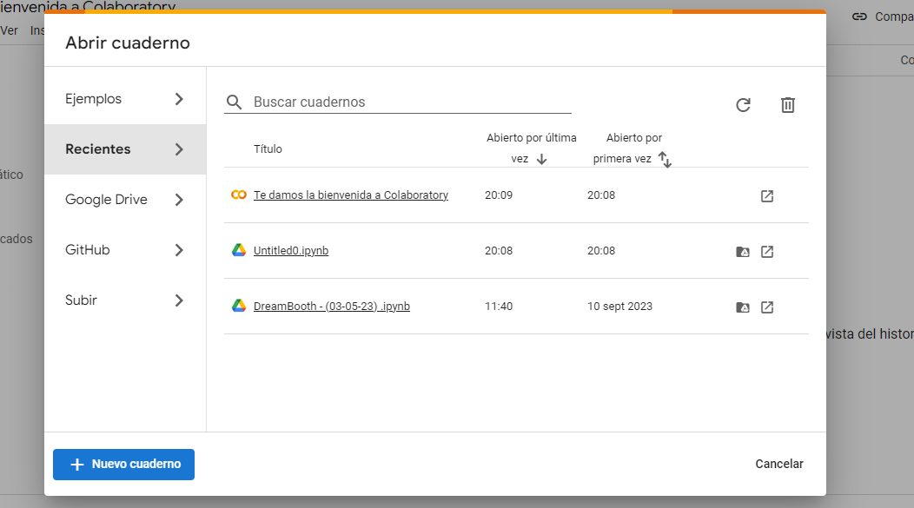

Google Colab, también conocido como Collaboratory, es un entorno gratuito basado en Jupyter Notebook que se ejecuta en los servidores de la nube de Google. No requiere instalación ni configuración de Python. Se tiene acceso gratuito a hardware CPU, GPU y TPU. Se puede compartir el código de manera similar que con Google Drive.
Jupyter Notebook es una aplicación web de código abierto que permite la creación y distribución de documentos interactivos que contienen código, texto explicativo, visualizaciones y otros elementos.
El nombre del proyecto Jupyter es una referencia a los tres lenguajes de programación principales soportados por Jupyter, que son Julia, Python y R, y también un homenaje a los cuadernos de Galileo que registran el descubrimiento de los satélites de Júpiter.
Vamos paso a paso
Cómo acceder
Para acceder a este servicio lo primero que se requiere es una cuenta en Gmail.
IMPORTANTE.: Tienes que usar una cuenta distinta a g.educaand.es ya que ésta no permite el acceso a este servicio de Google.
Te recomiendo que te crees una nueva cuenta ya que en la práctica que vamos a hacer, se van a pedir bastantes permisos, por lo que no se debería usar cuentas personales.
Una vez que tienes la cuenta, hay que ingresar a ella y luego, en otra ventana del navegador, ir a la siguiente dirección :
https://colab.research.google.com/.
Lo anterior te llevará a la página de inicio de Collaborator y en ella encontrarás un excelente tutorial para iniciar.
Para introducirnos un poco más en el mundo de Google Colab identifiquemos los aspectos básicos de una notebook en Colab
Nuevo Cuaderno
Cuando ingresamos en https://colab.research.google.com/. o directamente ponemos en el buscados Google Colab, nos aparecerán una imagen como la siguiente, y picaremos en +Nuevo Cuaderno

Aspecto del Notebook
Cuando se inicia una notebook obtendremos una vista como la siguiente:
En Google Colab, así como en Jupyter Notebook. existen dos tipos de celdas: Las enfocadas en el texto y las enfocadas en el código. Como bien lo describe su nombre la primera es útil para la redacción de texto incluyendo HTML y LaTeX, mientras que la segunda está enfocada a la ejecución de código en el lenguaje de programación Python.
Al igual que ocurre con Google Drive, los notebooks se guardan automáticamente, pero tú puedes guardarlos cuando quieras pulsando Ctrl+S
Texto y Código
Se muestran los botones a dar para agregar texto y para agregar código
Bastará con escribir el texto que deseas redactar, en este tipo de celdas cuentan con una barra de herramientas básica para modificar el texto como subrayar, letras negritas, viñetas , itálicas, etc. Cuando edites una celda, en el lado derecho podrás encontrar una vista previa del texto que estás editando.
De forma similar se hará para escribir código.
Hola Mundo
Vamos a probar lo de siempre. Fíjate en las imágenes y hazlo tú mismo y escribe en tu cuaderno digital, qué te ha parecido. ¿Te has fijado qué pasaba en la esquina superior derecha?